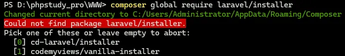
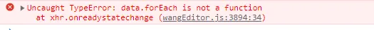
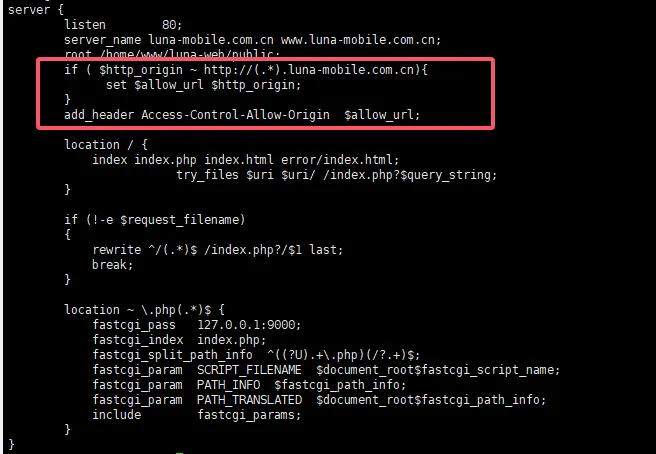
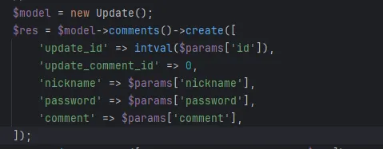
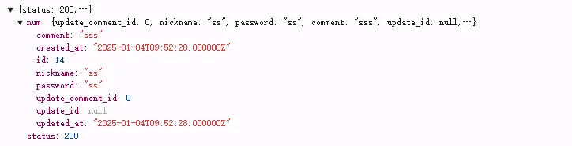
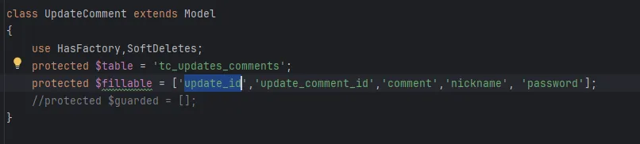
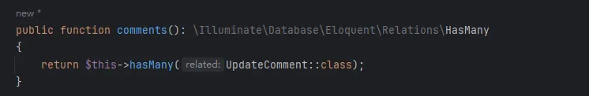
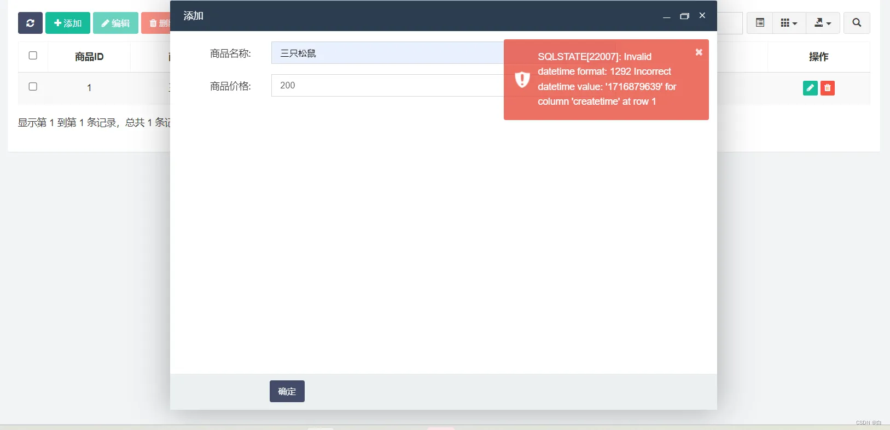

古之欲明明德于天下者，先治其国；欲治其国者，先齐其家；欲齐其家者，先修其身；欲修其身者，先正其心；欲正其心者，先诚其意；欲诚其意者，先致其知，致知在格物。物格而后知至，知至而后意诚，意诚而后心正，心正而后身修，身修而后家齐，家齐而后国治，国治而后天下平。–《礼记·大学》
Laravel
一、基础
Laravel是一个免费的开放源代码PHP Web框架，由Taylor Otwell创建，旨在遵循模型-视图-控制器(MVC)架构模式开发Web应用程序。
特点
- 强大的rest router:用简单的回调函数就可以调用，快速绑定controller和router
- artisan:命令行工具，很多手动的工作都自动化
- 可继承的模板，简化view的开发和管理
- blade模板:渲染速度更快
- ORM操作数据库
- migration:管理数据库和版本控制
- PHPUnit单元测试功能
- composer包自动管理依赖
- 设计模式:laravel框架引入了门面，依赖注入，Ioc 模式，以及各种各样的设计模式等
涉及的设计模式
- 工厂模式
- 单例模式
- 策略模式
- 原型模式
- 代理模式
- 注册树模式
- 适配器模式
- 观察者模式
- 装饰器模式
- 迭代器模式
- Request Lifecycle：Laravel的生命周期从public\index.php开始，从public\index.php结束，以下是public\index.php全部代码：
1 | require __DIR__.'/../bootstrap/autoload.php'; |
- 加载项目依赖，注册加载composer自动生成的class loader，也就是加载初始化第三方依赖(包括项目自带和手动require)。
- 创建应用实例，生成容器 Container，并向容器注册核心组件，是从bootstrap/app.php脚本获取 Laravel 应用实例，并且绑定内核服务容器。
- 它根据HTTP请求的运行环境的不同，将请求发送至相应的内核：HTTP内核或Console内核。
- 接收请求并响应，请求被发送到HTTP内核或Console内核，这取决于进入应用的请求类型。
- HTTP内核继承自Illuminate\Foundation\Http\Kernel类，该类定义了一个bootstrappers数组，这个数组中的类在请求被执行前运行，这些bootstrappers配置了错误处理、日志、检测应用环境以及其它在请求被处理前需要执行的任务。
- HTTP内核还定义了一系列所有请求在处理前需要经过的HTTP中间件，这些中间件处理HTTP会话的读写、判断应用是否处于维护模式、验证CSRF令牌等等。
- 发送请求，在Laravel基础的服务启动之后，把请求传递给路由。
- 路由器将会分发请求到路由或控制器，同时运行所有路由指定的中间件。
- 传递给路由是通过Pipeline来传递的，在传递给路由之前所有请求都要经过app\Http\Kernel.php中的$middleware数组，也就是中间件。
- 默认只有一个全局中间件，用来检测你的网站是否暂时关闭。所有请求都要经过，你也可以添加自己的全局中间件。
- 然后遍历所有注册的路由，找到最先符合的第一个路由，经过它的路由中间件，进入到控制器或者闭包函数，执行你的具体逻辑代码，把那些不符合或恶意的的请求隔离在外。
操作数据库：Laravel makes interacting with databases extremely simple across a variety of database backends using either raw SQL, the fluent query builder, and the Eloquent ORM.
- insert：插入数据时，需要维护created_at和updated_at字段
- save：无论插入或者更新会自动维护，无需手动操作，其接受一个完整的Eloquent模型实例
- 更新模型时，需要检索到它然后设置模型属性，再调用save方法，updated_at时间戳会自动更新
- save()方法的调用必须先实例化对象，所以是非静态(static)方法
- save()方法的功能是插入或更新，每一次调用方法都会查找当前的数据是否包含主键和数据表里是否包含当前主键，如果数据中没主键则获得一个自增的主键给当前对象，如果数据表中已存在该主键则更新该条数据
- 返回值为整型或false
- create：自动维护created_at和updated_at两个字段，其接受普通的PHP数组
- create()方法为静态方法，通过通过类直接调用
- create()的功能为实例对象和插入(new and create)
- 返回值为当前模型的实例对象
- update：更新操作，自动维护updated_at字段
反射的应用
Contracts：Laravel’s Contracts are a set of interfaces that define the core services provided by the framework.
Facades：Facades provide a “static” interface to classes that are available in the application’s service container. Laravel ships with many facades which provide access to almost all of Laravel’s features.
Service Container：The Laravel service container is a powerful tool for managing class dependencies and performing dependency injection. Dependency injection is a fancy phrase that essentially means this: class dependencies are “injected” into the class via the constructor or, in some cases, “setter” methods.
Service Providers：Service providers are the central place of all Laravel application bootstrapping. Your own application, as well as all of Laravel’s core services are bootstrapped via service providers.
路由
- Route::apiResource，资源隐式绑定
二、使用
项目创建
- 使用git
- 使用composer
- 使用composer直接创建
composer create-project laravel/laravel example-app - 使用laravel工具
composer global require laravel/installerlaravel new example-app
- 使用composer直接创建
- 使用Docker Desktop(MacOS)
curl -s "https://laravel.build/example-app" | bashcd example-app./vendor/bin/sail up
数据库
- 建表：php artisan make:migration create_users_table，最终会生成users表
- 生成：php artisan migrate，生成已定义好的表
控制器
- 创建：php artisan make:controller UserController
提交表单419错误码
- 表单加
{{csrf_field()}}
- 表单加
Requests对象
重定向的几种办法
- 使用Facdes的方式
- return Redirect::to(‘/home’)；
- return Redirect::route(‘website.home’);
- return Redirect::action(‘homeController@home’);
- 使用快速函数
- redirect()->to(‘/home’);
- redirect()->route(‘home’);
- return redirect()->action(‘homeController@home’);
- 使用Facdes的方式
常用命令
- php artisan optimize
- php artisan view:clear
- php artisan cache:clear
- php artisan route:clear
- php artisan route:list
- php artisan make:request Chat/ChatRequests
- php artisan make:migration xxx_table
- php artisan migrate –path=/database/migrations/xxx_table.php –f
- php artisan migrate
- php artisan schedule:list
- php artisan schedule:run
- php artisan schedule:work
- php artisan queue:retry +uuid
- php artisan queue:restart
- php artisan send:mail
三、参考
Laravel数据库迁移、回滚、撤销
- 命令
1 | # 回滚【最后一批】迁移（默认） |
Laravel数据库迁移轶事
一、复现过程
- 安装composer
- 创建laravel项目 composer create-project laravel/laravel laravel_migrate
- cd laravel_migrate
- php artisan make:migration create_shop_order
- 2021_03_25_152312_create_shop_order.php
1 | <?php |
- 修改.env文件，主要是MySQL
- php artisan migrate
突然发现发现命名不符合规范
- 手动修改2021_03_25_152312_create_shop_order.php，改为2021_03_25_152312_create_shop_order_table.php
去MySQL删除已经生成的表
再次执行
php artisan migrate，报错
1 | INFO Running migrations. |
- 于是乎你开始百度，GG，stackoverflow…找了一圈就这几个方案
- php artisan optimize:clear
- composer dump-autoload
- composer clear-cache
- Don’t rename the original migration files，If you must rename the migration, also make sure to rename the class too!
二、解决
执行
php artisan migrate时，Laravel会扫描migrations目录下所有.php文件，全部引入，PHP不允许同一个命名空间下定义两个同名类，直接抛出致命错误。
- 方案一：常会方式
1 | <?php |
- 方案二：使用anonymous migration support，8.37+支持
1 | <?php |
三、参考
ThinkPHP
一、使用
- 清除缓存：php think clear
- 创建文件：php think make:command TestCommand test_command
- 调整日志
- 配置文件
- 驱动文件
- 原生sql
- 引入库：use think\facade\Db;
- $monthMaulogTotal = Db::query(“select distinct(roleId), count(*) as total from t_snkrolelog force index (idx_timestamp) where timestamp >=$month_start and timestamp <=$month_end group by roleId”);
- 示例代码
1 | //新增账户数量，没有区服信息 |
二、问题
- thinkphp6，with查询多条件不生效
- 后端拼接的html代码，模板未解析
{{$row['rebate_record']|raw}}
三、参考
TP5.0.28公开漏洞
一、核心结论
ThinkPHP 5.0.28 不是安全维护版本，高危原生漏洞仍大量存在，生产环境不推荐使用
- ThinkPHP 5.0 系列早已停止官方安全维护，5.0.28 是5.0分支最后一个迭代版，但仅修复了当年已知漏洞，后续多年爆出的新漏洞、底层逻辑缺陷均无官方补丁；
- 5.0.28 修复了 5.0.23及之前 的两大顶级RCE，但仍保留大量中高危原生漏洞、配置漏洞、反序列化、文件操作缺陷；
- 合规/等保/公网业务强烈建议升级至 ThinkPHP 6/8；无法升级必须叠加多层防护。
二、5.0.28 已修复的高危漏洞（≤5.0.23存在，28已封堵）
1. CVE-2018-20062 非强制路由远程代码执行（GetShell）
- 影响：
5.0 ~ 5.0.23，5.0.24+修复（含28） - 原理：
s=xxx参数未过滤反斜杠\，可任意调用框架内置类方法，无鉴权远程执行代码、拿服务器权限 - 利用条件：未开启强制路由（默认关闭，历史站点极易中招）
- 修复手段：控制器名校验正则拦截非法字符，5.0.28完整包含此修复
2. 5.0.x Debug模式变量覆盖RCE（2019年1月漏洞）
- 影响：
5.0 ~ 5.0.23，5.0.24起修复 - 原理：开启
app_debug=true时，请求参数变量覆盖，配合请求类魔术方法执行任意代码 - 28修复：加固变量赋值逻辑，阻断覆盖链
三、ThinkPHP 5.0.28 仍然存在、无官方补丁 的公开漏洞（重点风险）
（一）模板引擎文件读取/包含RCE（CVE-2025-63888 / CVE-2025-63889）
- 影响版本：5.0.24 ~ 5.0.28 全中
- CVE-2025-63889 任意文件读取（高危）
模板fetch()路径校验不严，传入恶意路径可读取服务器任意文件（数据库配置、密钥、源码） - CVE-2025-63888 缓存文件包含RCE（严重）
view()渲染缓存文件时未过滤路径，上传图片马/日志写入恶意代码后，通过模板包含执行PHP，无调试模式也可利用
- 触发条件：业务使用
view()/fetch()渲染自定义变量、允许用户控制模板名称/路径
（二）反序列化漏洞（多条，5.0全系列含28）
- Windows类
__destruct任意文件删除
可控反序列化输入时，构造序列化字符串可删除服务器任意文件（网站源码、配置） - Request/Output魔术方法反序列化RCE
存在unserialize()可控入口（Cookie、GET/POST参数、缓存读取）时，完整链可执行系统命令、写WebShell
- 风险：绝大多数TP5业务会把Cookie/缓存做序列化存储，极易触达
（三）SQL注入相关缺陷（5.0.28未根治）
- 数组参数报错注入（updatexml报错盲注）
开启app_debug=true时，数组形式查询参数绕过PDO预编译，报错泄露数据库账号、脱库；关闭Debug仍可时间盲注脱库
Payload示例：?ids[0,updatexml(0,concat(0xa,user()),0)]=1 - orderby/groupby字符串拼接注入
order($param)、group($param)直接拼接用户输入，无过滤可注入任意SQL语句，5.0.28仅做简单转义，仍存在绕过方式
（四）信息泄露类漏洞
- CVE-2022-25481 环境变量泄露
默认PATHINFO配置缺陷，访问首页可读取服务器全部环境变量（数据库密码、OSS密钥、API密钥） - Debug调试页面敏感信息泄露
只要app_debug=true，报错页完整暴露：数据库账号密码、服务器路径、框架源码、Redis/MQ凭证；公网开启=裸奔 - runtime日志目录未限制访问
/runtime/log/日志明文存储SQL、POST请求、账号密码，Nginx/Apache默认可直接下载
（五）语言切换文件包含漏洞
lang_switch_on = true（默认开启）时，lang参数可控，可跨目录包含任意本地文件，配合图片马实现代码执行
（六）其他通用底层风险（5.0.28无法彻底修复）
- Phar反序列化链：支持phar://伪协议，上传phar文件后配合文件读取漏洞触发RCE
- 上传漏洞辅助利用：框架无内置文件类型强校验，业务代码疏漏极易上传图片马，配合模板包含漏洞执行
- 路由机制底层缺陷：即便修复控制器RCE，自定义路由、闭包路由仍存在输入过滤不严的次生漏洞
四、5.0.28 临时缓解方案（无法根除，仅降低风险）
- 永久关闭调试
1 | // config/app.php |
- 开启强制路由（阻断历史路由RCE变种）
1 | 'route_must' => true, |
- Web服务器拦截敏感目录（Nginx示例）
1 | location ~ ^/(runtime|config|vendor|template)/ { deny all; } |
- 禁用模板动态路径、禁止用户可控模板名；
fetch/view固定模板路径，不接收外部传入文件名 - 关闭语言自动切换
1 | 'lang_switch_on' => false, |
- 代码层防护：
- 所有
order/group参数做白名单校验，禁止直接拼接用户输入 - 业务禁用
unserialize()处理外部输入，改用json存储Cookie/缓存 - 文件上传校验文件头+后缀双重拦截，禁止上传phar、图片马
- 所有
- WAF拦截特征：拦截
s=index/\think\、fetch?file=、lang=、phar://等攻击载荷
五、长期安全建议
- 最优方案：升级至 ThinkPHP 6.1/8，官方持续维护，修复全部5.0遗留底层漏洞；
- 无法升级5.0.28：公网业务必须部署专业WAF，定期扫描渗透，禁止存放支付、用户隐私等高敏感业务；
- 禁止公网直接暴露5.0.x系列站点，等保、渗透测试会判定为高危漏洞，存在合规风险。
FastAdmin（TP5.0.28）无法升级完整加固方案
前提说明： FastAdmin 底层锁定 ThinkPHP5.0.28，TP5.0 官方早已停止安全维护，底层存在模板包含、反序列化、order注入、lang文件读取、phar伪协议等原生漏洞，FastAdmin自身还有SelectPage注入、上传、XSS、后台备份高危功能漏洞。
下面分四层加固：TP底层补丁修复、FastAdmin业务层修复、PHP运行环境限制、Nginx/WAF网络拦截，覆盖全部公开可利用漏洞。
一、先梳理该组合下可被利用的全部高危漏洞
1. ThinkPHP5.0.28 原生未修复漏洞（框架底层）
- 模板fetch/view路径可控→任意文件读取/缓存包含RCE（CVE-2025-63888/63889）
- lang多语言参数路径穿越读配置文件
- order/group字段直接拼接SQL注入（Debug下报错盲注、关闭Debug时间盲注）
- 可控反序列化完整RCE链（Cookie/缓存unserialize）
- Phar伪协议反序列化触发
- 开启Debug环境变量、数据库密码完整泄露
- runtime日志目录可直接下载明文账号密码、SQL语句
2. FastAdmin专属漏洞（业务层）
- SelectPage排序/筛选条件SQL注入（2026年官方安全公告）
- 后台配置、规则、附件管理XSS跨站
- lang参数文件读取（CVE-2024-7928 未授权读config/database.php）
- 分片上传文件合并路径穿越（低权限账号上传Shell）
- 后台备份功能可打包下载全站源码+数据库配置
- API接口JSONP、敏感字段泄露
- 上传目录可执行PHP图片马
二、ThinkPHP5.0.28底层手动补丁（必须操作，封堵框架原生漏洞）
1. 加固控制器路由，阻断遗留变种RCE
修改 thinkphp/library/think/App.php
找到控制器获取代码：
1 | $controller = strip_tags($result[1] ?: $config['default_controller']); |
下方增加白名单正则校验：
1 | // 增加控制器名校验，禁止\、/、.、特殊类路径 |
2. 禁用模板原生{php}标签，杜绝模板代码执行
文件：vendor/topthink/think-template/src/Template.php
搜索 taglib_php，直接注释/删除PHP标签解析逻辑，彻底关闭模板内执行PHP代码能力。
3. 修复fetch路径穿越，禁止外部可控模板路径
重写全局fetch方法，新建 application/common.php 全局覆盖：
1 | function fetch($template = '', $vars = [], $replace = [], $config = []) |
4. 关闭多语言自动切换，封堵lang文件读取漏洞
config/app.php
1 | 'lang_switch_on' => false, |
5. 全局过滤order/group参数，根治SQL注入
新建中间件 application/middleware/SqlFilter.php
1 |
|
config/middleware.php 注册全局中间件：
1 | return [ |
6. 禁用unserialize处理外部输入，阻断反序列化RCE
全局搜索代码中 unserialize($_、unserialize($this->request-> 全部替换为json_decode；
Cookie存储统一使用json，禁止序列化存储。
三、FastAdmin框架专属漏洞修复（官方安全补丁）
1. 修复SelectPage SQL注入（2026-05官方高危）
下载官方修复文件覆盖：
https://raw.giteeusercontent.com/fastadminnet/fastadmin/raw/127919050e5cf700e652ee9d53489007e1be1820/application/common/library/SelectPage.php
覆盖 application/common/library/SelectPage.php
2. 关闭分片上传（高危上传RCE入口）
application/config.php
1 | 'chunking' => false, |
3. 修复后台XSS输出过滤
全局搜索后台模板 {$vo.xxx} 统一改为 {$vo.xxx|htmlspecialchars}；
更新官方修复后的rule.js、upload.js静态文件（官网安全公告可下载）。
4. 限制后台备份功能，禁止全站打包下载
修改 application/admin/controller/Database.php
- 备份只允许单表，移除全站备份选项
- 备份文件存放目录Nginx拦截外部访问
5. API接口关闭JSONP、过滤敏感字段
config/api.php
1 | 'jsonp_callback' => false, |
统一API输出过滤数据库密码、密钥、token等敏感字段。
四、PHP-FPM运行环境底层限制（釜底抽薪，即使漏洞也无法执行命令）
php.ini / php-fpm.conf 配置：
- 禁用高危执行函数
1 | disable_functions = system,exec,shell_exec,passthru,popen,proc_open,eval,assert,pcntl_exec,file_put_contents,fopen,move_uploaded_file |
- 目录访问隔离 open_basedir（Nginx fastcgi参数）
1 | fastcgi_param PHP_VALUE "open_basedir=/www/你的项目/:/tmp/"; |
禁止PHP读取系统目录、跨目录读取配置。
3. 关闭PHP文件上传临时文件执行、限制上传大小
4. 关闭phar伪协议解析
1 | = On |
- 永久关闭调试模式（重中之重）
config/app.php
1 | 'app_debug' => false, |
五、Nginx站点防护规则（网络层拦截所有攻击载荷）
复制到站点server块，一层拦截攻击，不进PHP：
1 | # 1. 拦截TP漏洞特征 payload |
六、后台账号与运维安全策略
- 修改默认admin账号，使用强密码（大小写+数字+符号），关闭游客注册
- 开启后台登录验证码、登录失败锁定5分钟
- 定期清理runtime/log日志，日志不保留超过7天
- 禁用不需要的插件，删除测试插件、演示插件
- 部署WAF（宝塔WAF/阿里云WAF），开启SQL注入、路径穿越、XSS拦截规则
- 网站目录权限：www-data只读，uploads仅写入，禁止777权限
- 定期扫描：使用AWVS、Xray渗透扫描，每月一次漏洞复测
七、风险兜底说明
- 以上加固只能大幅降低被利用概率，无法彻底根除TP5.0底层架构缺陷（无官方底层修复）；
- 涉及支付、用户隐私、企业核心数据业务，长期仍存在合规与被入侵风险；
- 中长期方案：业务解耦拆分，新项目改用FastAdmin V2（基于TP6），老项目逐步迁移；
- 等保/渗透测试场景：必须提供完整加固文档+WAF日志+漏洞复测报告，否则会判定高危漏洞。
FastAdmin TP5.0.28 一键加固操作清单（按执行顺序）
前置说明
- 操作前完整备份项目源码+数据库，避免改错无法回滚
- 所有配置修改完成后，重启Nginx、PHP-FPM生效
- 全部操作完成后，使用Xray/宝塔WAF扫描复测漏洞
第一阶段：框架配置文件修改（项目目录直接改）
1. 关闭调试、关闭多语言自动切换（config/app.php）
1 | 'app_debug' => false, |
2. 关闭分片上传、关闭JSONP（application/config.php）
1 | 'chunking' => false, |
config/api.php
1 | 'jsonp_callback' => false, |
3. 注册全局SQL过滤中间件（拦截order/group注入）
步骤3.1 新建中间件文件 application/middleware/SqlFilter.php
1 |
|
步骤3.2 注册全局中间件 config/middleware.php
1 | return [ |
第二阶段：TP底层源码加固（封堵框架原生漏洞）
1. 加固控制器路由，拦截类路径RCE（thinkphp/library/think/App.php）
找到代码：
1 | $controller = strip_tags($result[1] ?: $config['default_controller']); |
下方追加校验代码：
1 | // 防御控制器路径穿越、反斜杠类漏洞 |
2. 全局覆盖fetch方法，禁止模板路径穿越（application/common.php 末尾追加）
1 | /** |
3. 关闭模板原生{php}执行标签（vendor/topthink/think-template/src/Template.php）
全局搜索 taglib_php，注释/删除PHP标签解析逻辑，彻底禁止模板内执行PHP代码。
第三阶段：FastAdmin专属漏洞修复
1. 修复SelectPage SQL注入漏洞
覆盖文件：application/common/library/SelectPage.php
官方修复地址：https://gitee.com/fastadminnet/fastadmin/raw/master/application/common/library/SelectPage.php
2. 限制数据库备份功能（application/admin/controller/Database.php）
- 删除全站批量备份功能，仅保留单表备份
- 备份文件统一存放至非web可访问目录
3. 模板XSS统一过滤
所有后台html模板中输出变量统一增加html转义：{$data.name} → {$data.name|htmlspecialchars}
第四阶段：PHP运行环境加固（php.ini / php-fpm.conf）
1. 禁用高危执行函数
1 | disable_functions = system,exec,shell_exec,passthru,popen,proc_open,eval,assert,pcntl_exec,file_put_contents,file_get_contents,move_uploaded_file |
2. 关闭phar伪协议利用
1 | = On |
3. 配置运行目录隔离 open_basedir（Nginx fastcgi参数）
1 | fastcgi_param PHP_VALUE "open_basedir=/www/项目根目录/:/tmp/"; |
第五阶段：Nginx站点防护配置（server块内完整复制）
1 | # 拦截TP漏洞攻击特征 |
第六阶段：代码层整改（人工全局检索替换）
- 全局搜索
unserialize(，所有接收请求、cookie参数的unserialize全部替换为json_decode - Cookie存储统一使用json，不再使用序列化
- 删除项目内所有演示插件、测试插件、无用第三方插件
- 上传校验增强：文件后缀+文件头双重校验，禁止phar、svg、html等可执行文件上传
第七阶段：权限与账号运维加固
- 网站目录权限：程序目录只读，uploads仅写入，禁止777权限
- 修改默认admin账号，设置16位以上强密码
- 后台开启登录验证码、开启登录失败锁定（连续5次错误锁定5分钟）
- 设置定时任务自动清理runtime/log日志，保留不超过7天
- 部署WAF（宝塔WAF/云厂商WAF），开启SQL注入、路径穿越、XSS防护规则
第八阶段：生效与复测步骤
- 保存全部文件
- 重启 php-fpm + nginx
- 清理 runtime/cache 缓存目录
- 使用漏洞扫描工具（Xray/awvs）全站点扫描
- 手动测试高危漏洞payload验证拦截效果
- 留存加固文档、扫描报告用于等保/渗透检查
FastAdmin(TP5.0.28) 修正版一键加固操作清单
前置必做
- 完整备份项目源码+数据库，防止改错回滚
- 修改完成后重启 php-fpm、nginx，清空 runtime/cache
一、全局配置修改（application/config.php）
打开 application/config.php，修改/新增以下配置
1 | // 关闭调试、关闭追踪 |
二、API模块关闭JSONP（application/api/config.php）
1 | 'jsonp_callback' => false, |
三、新增全局SQL注入防御中间件
3.1 创建文件 application/middleware/SqlFilter.php
1 |
|
3.2 注册全局中间件 application/middleware.php
1 |
|
四、ThinkPHP底层源码加固（目录不变）
4.1 App.php 控制器路由加固
文件路径：thinkphp/library/think/App.php
找到代码：
1 | $controller = strip_tags($result[1] ?: $config['default_controller']); |
下方插入校验代码：
1 | if (!preg_match('/^[A-Za-z]\w*$/', $controller)) { |
4.2 重写fetch防模板路径穿越
打开 application/common.php，文件末尾追加：
1 | /** |
4.3 禁用模板 {php} 可执行标签
文件：vendor/topthink/think-template/src/Template.php
搜索 taglib_php，注释/删除PHP标签解析逻辑，禁止模板内执行PHP代码。
五、FastAdmin专属漏洞修复
5.1 修复SelectPage排序注入
覆盖文件：application/common/library/SelectPage.php
下载官方修复文件替换：
https://gitee.com/fastadminnet/fastadmin/raw/master/application/common/library/SelectPage.php
5.2 限制后台数据库备份
文件：application/admin/controller/Database.php
- 移除全站一键备份功能，仅保留单表备份
- 将备份目录迁移至 web 不可访问路径
5.3 全局模板XSS过滤
所有后台html模板输出变量统一转义：{$vo.title} → {$vo.title|htmlspecialchars}
六、PHP环境加固（php.ini / php-fpm.conf）
- 禁用危险执行函数
1 | disable_functions = system,exec,shell_exec,passthru,popen,proc_open,eval,assert,pcntl_exec |
- 关闭phar伪协议利用
1 | = On |
- Nginx 配置目录隔离
1 | fastcgi_param PHP_VALUE "open_basedir=/www/你的项目目录/:/tmp/"; |
七、Nginx 站点完整防护规则（server块直接粘贴）
1 | # 拦截TP漏洞特征payload |
八、全局代码检索整改
- 全局搜索
unserialize(，所有接收GET/POST/COOKIE的序列化全部替换为 json_decode - Cookie统一使用json存储，放弃serialize
- 删除无用、演示、测试类插件
- 上传增加双重校验：后缀校验 + 文件头校验，禁止phar、svg、html上传
九、账号与服务器权限加固
- 修改默认admin账号，设置16位强密码
- 后台开启登录验证码、登录失败锁定（5次错误锁定5分钟）
- 网站程序目录设置只读，uploads目录仅写入，禁止777权限
- 定时清理 runtime/log 日志，仅保留7天内日志
- 部署WAF，开启SQL注入、路径穿越、XSS防护
十、生效&复测流程
- 保存所有修改文件
- 重启 php-fpm + nginx
- 删除
runtime/cache全部缓存文件 - 使用Xray/宝塔WAF进行漏洞扫描复测
- 手动测试漏洞payload验证拦截效果
- 留存加固记录用于等保、渗透测试
CodeIgniter(CI)
Yii
Symfony
Zend Framework
Laravel-admin
一、使用
一、Laravel+laravel-admin
- composer global require laravel/installer
- composer clear-cache
- composer config -g repo.packagist composer https://packagist.phpcomposer.com
- composer config repo.packagist composer https://packagist.phpcomposer.com
- composer global require laravel/installer

- composer config -g repo.packagist composer https://mirrors.aliyun.com/composer/
- composer global require laravel/installer
- laravel new luna-laraveladmin
- laravel new luna-web
- cd luna-web
npm installnpm run buildcomposer run dev- composer require encore/laravel-admin
- php artisan vendor:publish –provider=”Encore\Admin\AdminServiceProvider”
- php artisan admin:install
- 添加网站
- 修改重写
- 添加菜单
- 公告管理
- php artisan make:model Admin\Notice
- php artisan admin:make NoticeController –model=App\Models\Admin\Notice
- 创建表：tc_notices
- 活动管理
- php artisan make:model Admin\Event
- php artisan admin:make EventController –model=App\Models\Admin\Event
- 创建表：tc_events
- 更新管理
- php artisan make:model Admin\Update
- php artisan admin:make UpdateController –model=App\Models\Admin\Update
- 创建表：tc_updates
- 新手教学
- php artisan make:model Admin\Guide
- php artisan admin:make GuideController –model=App\Models\Admin\Guide
- 创建表：tc_guides
- 常见问题
- php artisan make:model Admin\Faq
- php artisan admin:make FaqController –model=App\Models\Admin\Faq
- 创建表：tc_faqs
- 添加官网controller
- php artisan make:controller NoticeController
- php artisan make:controller EventController
- php artisan make:controller UpdateController
- php artisan make:controller GuideController
- php artisan make:controller FaqController
- 富文本编辑器
composer require laravel-admin-ext/tinymcephp artisan vendor:publish –tag=laravel-admin-tinymce- composer require tinymce/tinymce
- php artisan vendor:publish –tag=laravel-assets –ansi –force
- config/admin.php中注册TinyMCE编辑器
1 | 'extensions' => [ |
- 在控制器中添加
1 |
|
二、问题
- 上传图片访问不到
- php artisan storage:link，会在public目录下创建软连接
- 权限问题：可以是角色级别，也可以是用户级别
- sidebar默认展开，修改config/admin.php
- laravel上传图片：https://learnku.com/laravel/t/45408
- wang-editor上传完不回显

1 | return array( |
- 注释powered by：vendor/encore/laravel-admin/resources/views/partials/footer.blade.php
- 登录首页修改config/admin
- 清掉bootstrap/cache目录
- Access to font at ‘http://luna-mobile.com.cn/images/Simple-Line-Icons.woff2' from origin ‘http://www.luna-mobile.com.cn' has been blocked by CORS policy: No ‘Access-Control-Allow-Origin’ header is present on the requested resource.

- model->save失败，参考
- update_id写入失败




三、参考
- https://laravel-admin.org/
- https://zhuanlan.zhihu.com/p/498444931
- https://www.cnblogs.com/sucretan2010/p/13065692.html
- https://packagist.org/
- https://github.com/z-song/laravel-admin/issues/2781
- https://github.com/z-song/laravel-admin/issues/1541
- https://laravel-admin.org/docs/zh/1.x/installation
- https://github.com/z-song/laravel-admin
- https://www.cnblogs.com/lxwphp/p/15454314.html
- https://blog.csdn.net/qq_39801208/article/details/121980167
- https://blog.csdn.net/qq_40787608/article/details/129414154
FastAdmin
一、使用
1.下载完整包：https://www.fastadmin.net/download.html
- 1.6.5.20260602.zip，即v1.6.0+版本
- 解压到当前目录，如new_zhongkong.local
- 重启laragon所有服务
- 访问站点：http://new_zhongkong.local，laragon设置的后缀为local
- 报错
1 | think\App::run(): Implicitly marking parameter $request as nullable is deprecated, the explicit nullable type must be used instead |
- 查看官方文档，发现v1.6.0+版本推荐使用php8.0
- 更换php版本：8.1.32
- 设置伪静态
1 | location ~* (runtime|application)/{ |
- 创建数据表
二、问题
- 配置多数据库连接：https://ask.fastadmin.net/question/13980.html
- 列表取消编辑、删除按钮：修改模板
- 表格无刷新编辑
- 安装editable插件
- js引入插件
- Token验证错误
- 写入报错

- protected $autoWriteTimestamp = ‘datetime’;
- protected $createTime = ‘created_at’;
- protected $updateTime = ‘updated_at’;
- protected $dateFormat = ‘Y-m-d H:i:s’;
- 没有访问权限
- 要添加列表、编辑、删除等按钮的菜单
- chargeset不行，更换charge恢复正常
- 清理缓存报错：权限问题
- operate可选操作
- sortName可选操作
- 查询对应账号下的数据
1 | public function base($query) |
- 设置搜索条件，对应的js文件
- 开启/关闭：operator：true/false
- 下拉框
- 增加接口
- 修改js
- 设置方法不需要权限控制
1 | protected $noNeedLogin = ['getAgentList']; |